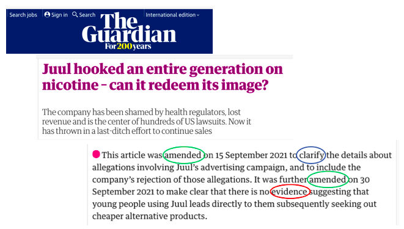
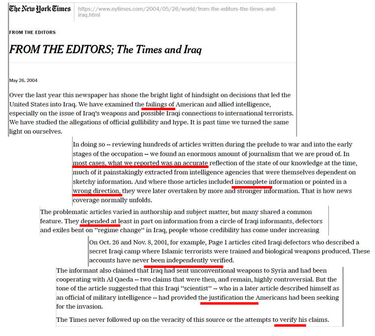
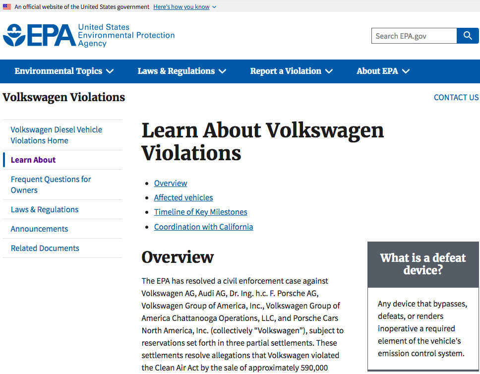
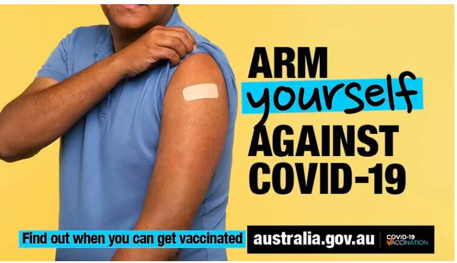
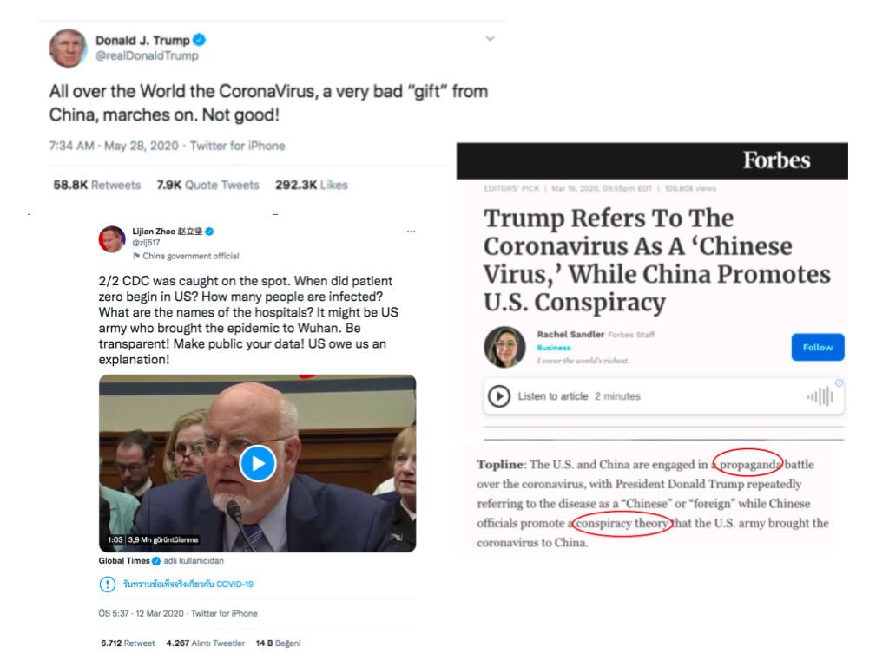
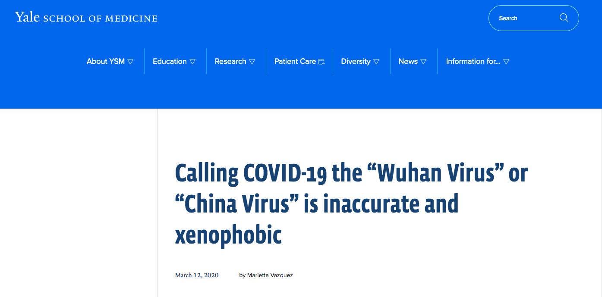
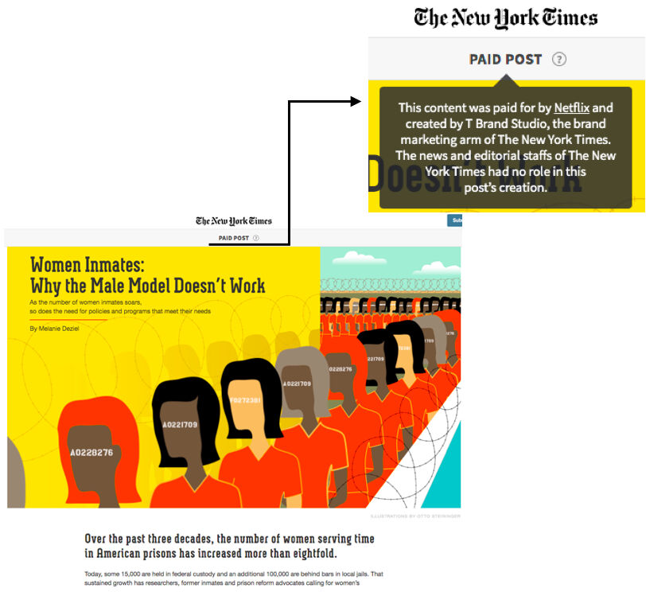

За полазнике
За тренере
За полазнике
За тренере
Модул 12: Разликовање вести од другог медијског садржаја
Опис модула
Главни циљ овог модула је да представи полазницима како да разликују вести од других медијских садржаја. Секундарни циљ је да усмери тренере који желе да користе садржај овог модула за обуку полазника.
У складу са овим циљевима, модулом су обухваћене дефиниције вести и других медијских садржаја, као што су оглашавање, промоције, публицитет, пропаганда, необрађене информације и забавни садржај. Главне карактеристике вести које су неопходне за разликовање вести од других садржаја, “универзални покретачи вести” (енг. universal news drivers) биће објашњени кроз релевантне примере. Смернице о томе како обрадити ову тему су представљене у овом модулу.
Полазници који успешно заврше овај модул моћи ће да:
- Идентификују шта су вести и које су њихове главне карактеристике (верификација, независност и одговорност)
- Идентификују друге медијске садржаје и направе разлику између њих и вести.
Поред тога, тренери који успешно заврше овај модул, моћи ће да покажу разумевање смерница за подучавање ове теме.
Структура модула
Овај модул се састоји из следећих целина:
- Опис модула (циљеви, опис садржаја и исходи учења)
- Структурa модула
- Смернице за полазнике
- Смернице за тренере (како се припремити, методе које треба користити и савети за тренере)
- Садржај (материјал за учење и вежбање)
- Квиз
- Референце (цитирани извори, препоручени извори и видео-записи)
Главни циљеви модула, опис садржаја и исходи учења објашњени су у делу Опис модула. Садржај обухвата све потребне материјале за учење и вежбе везане за садржај. Квиз укључује питања са вишеструким избором како би полазници тестирали свој напредак. Одељак Референце обухвата списак извора цитираних у садржају модула и листу додатних извора и видео-записа који се препоручују за читање и гледање како би се проширило знање о овој теми. Смернице за полазнике укључују упутства и сугестије за полазнике. Смернице за тренере воде тренере кроз различите фазе обуке и дају савете који би могли да буду корисни током предавања предмета.
Смернице за полазнике
Од полазника се очекује да прочитају текст и ураде вежбања. Они могу да консултују предложене ресурсе за додатне информације. Након проучавања садржаја, полазницима се препоручује да ураде квиз како би проценили свој напредак.
Смернице за тренере
Смернице за тренере укључују сугестије и савете о томе како да користе садржај овог модула за обуку полазника. Уколико је потребно, могу поново проучити материјал за учење.
Припрема
Припремите презентацију (Пауерпоинт/Прези/Канва) која је обогаћена визуелним материјалима. Предлажемо да користите примере и препоручене вежбе које су најпознатије циљној групи. Коришћење локалних или добро познатих тема помаже да се задржи пажња ученика.
Почетак
Како бисте увели полазнике у тему, на почетку можете користити кратак квиз (3 до 5 питања) направљен у Кахуту или им поставити питања путем Ментиметар апликације. Поменути квиз и питалице се могу користити као мотивационо средство и средство за проверу постојећег знања полазника о овој теми. Питања, на пример, могу бити:
- Шта су вести?
- У чему је разлика између промоције и вести?
- Како можемо разликовати вести од забавног садржаја?
- Шта значи одговорност?
Методологија
Током обуке могу се комбиновати различите наставне методе:
- Предавања
- Рад у групама
- Индивидулани рад
- Самопроцењивање
Савети за тренере
Загревање
Ефикасан начин укључивања полазника и утврђивања заједничких очекивања о томе шта ће научити јесте постављање неколико прелиминарних питања о томе како се вести разликују од других медијских садржаја. Полазницима можете поставити следеће питање: Можете ли да наведете пример потенцијалних разлика у медијском садржају? Активност за загревање може да садржи следеће елементе:
- припремите различите примере медијског садржаја (нпр. вести, рекламе, забавни садржај)
- питајте учеснике да ли је пример који су дали вест, или не
- замолите учеснике да поделе и објасне своје одговоре, као и како су дошли до закључка
Након активности, уверите се да учесници разумеју да постоје разлике у медијском садржају.
Представљање циља лекције
Циљ лекције треба да буде јасан. Након питања за загревање, лакше ћете разјаснити циљеве.
Представљање садржаја лекције
Приликом представљања садржаја, водите рачуна о интеракцији са полазницима и подстакните их на активно учешће.
Пре:
- Пре часа припремите примере различитих медијских садржаја.
Током:
- На почетку часа поставите полазницима питања као што су:
- Шта знају о вестима и другом медијском садржају?
- Шта су вести?
- Како се вести могу разликовати од другог медијског садржаја, као што су необрађене информације, промоције?
- Које би могле бити последице прихватања других медијских садржаја, као да су вести?
- Који је најприкладнији начин да се вести разликују од других медијских садржаја
- Приликом представљања садржаја модула:
- Замолите учеснике да наведу примере различитог медијског садржаја.
- Изнесите коментаре о њиховим примерима.
На крају:
- Уверите се да учесници разумеју да постоји разноврстан медијски садржај.
- Анализирајте и детаљно изложите важност разликовања вести од других медијских садржаја.
- Замолите учеснике да наведу сопствене примере шта јесте, а шта није вест. Замолите их да објасне свој избор користећи садржај модула.
Сугестије:
- Своје лекције обавезно поткрепите локалним или добро познатим примерима и вежбама.
- Приликом одабира примера, уверите се да се добро уклапају у дефиницију медијског садржаја.
Закључак
Направите кратак резиме лекције и поставите неколико питања која ће помоћи да истакнете најважнији садржај и примере везане за тему.
Садржај: Разликивање вести од другог медијског садржаја
Увод
Препознавање или разликовање вести од другог медијског садржаја је веома важно, али није увек лако. Медији су све што се понаша као канал за информације. То може бити било шта што преноси информације од једне до друге особе или места (Checkology Glossary, 2021).
Информације које се преносе путем различитих врста медија треба да буду “поуздане”. Поуздане информације поседују три главне карактеристике: верификацију, независност и одговорност (Digital Resource Center, 2021). Хорник, Анзалоне & Спајкс (2018, стр. 192) користе “информациона суседства” (енг. information neighborhoods) као концепт новинске писмености, који је осмишљен да помогне разликовању различитих типова информација: новинарство, забавни садржај, оглашавање, промоцију, пропаганду и необрађене информације (види Tабелу 1). Кварт Вести, или Новинарство је једини који обухвата верификацију, независност и одговорност. Вести би требало да прођу кроз новинарски процес, који укључује ове три карактеристике. Већина других медијских садржаја нема ове три основне карактеристике; и због тога, понекад, линије између различитог медијског садржаја могу бити нејасне.
Дефиниције појмова (Hornik et al., 2018):
- Верификација је процес којим се утврђује или потврђује тачност или валидност новинарског извештавања.
- Независност је слобода од утицаја или подршке спољних актера.
- Одговорност је преузимање одговорности, именом, за истинитост и поузданост новинског извештаја.
Табела 1: Информациона суседства

(Извор: Center for News Literacy, Stony Brook UnivesitySchool of Journalism)
Овај модул ће помоћи ученицима да идентификују и објасне карактеристике вести у односу на друге медијске садржаје.
Вести
Вест је “правовремена информација од неког јавног интереса која се дeли и подлеже новинарском процесу верификације и за коју је директно одговоран независни појединац или организација” (Hornik et al., 2018, стр. 193). Вести треба да информишу публику путем фер и непристрасног извештавања и треба да буду објективне у односу на лична мишљења аутора. Понекад граница између вести и мишљења о тој вести, или између вести и другог медијског садржаја, може бити нејасна. Само вести имају неопходне карактеристике верификације, независности и одговорности.
Новинарство захтева савестан покушај да се информације што прецизније прикупе и саопште, као и да се испитају и провере. Верификација је дуго била суштински стандард новинарства. Користи строге критеријуме како би се осигурало да су информације укључене у приче што тачније, наглашавајући важност одлагања објављивања непроверених информација. Истина остаје примарна сврха новинарства, било кроз традиционално извештавање, грађанско новинарство или хибридне комбинације. Уколико су информације на којима се заснивају вести (и формирају судови грађана) непоуздане, сумњиве или чак потпуно погрешне, не може бити свесног грађанства (Perloff, 2020, стр. 58).
Независност од влада и свих других елемената моћи такође је изузетно важна у процесу припремања вести. Новинарске активности треба да се обављају потпуно независно од било ког финансијера или владине агенције (Pickard, 2020, стр. 169). Различити извори потврђују да је стварање јавног медијског екосистема корисно за промовисање различитости и независности у вестима, као и за подстицање политичког знања и демократског учешћа. Такође, системи јавних медија су вођени нормативном посвећеношћу како би осигурали да сви чланови друштва имају приступ информационим и комуникационим системима (Pickard, 2020, стр. 166).
У демократији, медијске организације и њихови новинари су на различите начине одговорни својој публици и друштву. На пример, ако некога оклеветају или покажу непоштовање према суду, одговорни су по закону. Што се тиче етичких питања, штампа има неколико саморегулаторних механизама који позивају уреднике на одговорност кроз њихову способност да осигурају објављивање критичних одлука. Медијске организације наглашавају да их на одговорност позива и њихова пубика (и оглашавачи). Читаоци, гледаоци или слушаоци могу бити изгубљени у случају одређеног понашања или негативне реакције јавности на садржај (Franklin, Hamer, Hanna, Kinsey & Richardson, 2005, стр. 3-4). Новинарске активности, за разлику од других видова информисања, захтевају од новинара да теже независности. На пример, мало је вероватно да ће стручњак за односе с јавношћу који ради за неку организацију делити информације због којих би организација могла да изгледа лоше. Новинар ће, с друге стране, покушати да прикаже комплетну слику, чак и када она није скроз позитивна (Potter, 2006, стр. 9).
Пример одговорности:
У овом новинском чланку, у потрази за новинарском тачношћу и интегритетом, Гардијан додатно мења претходни чланак, који је већ два пута мењао, цитирајући неколико случајева непотпуног истраживања и извештавања.

Извор: The Guardian
Пример одговорности и верификације:
У далекосежнијем признавању грешке, уредништво Њујорк Тајмса је навело више недостатака у свом првобитном извештавању о инвазији САД на Ирак. Нетачан, непотпун и непроверен новински садржај је признат и повучен.

Извор: The New York Times
Постоје три фактора која одређују шта ће бити објављено као вест (Digital Resource Center, 2021):
- Универзални покретачи вести
- Процена уредништва
- Процена публике
Универзални покретачи вести
Да би се утврдило да ли је нека информација вест или не, постоје одређени фактори који се називају информативне вредности или универзални покретачи вести (Digital Resource Center, 2021; Hornik et al., 2018, стр. 194):
- Значај: Одређене информације су од кључне важности и потребно је да јавност буде упозната са њима, нарочито када те информације имају озбиљне импликације за ширу јавност, попут пандемије или економске кризе.
- Истакнутост: Прича постаје вест због људи који су у њу укључени, нарочито ако је нека прича везана за важну јавну личност као што је политичар.
- Људски интерес: Јединствено или универзално искуство истраживања људског стања.
- Конфликт: Неслагање између људи, институција или идеја. Без обзира да ли се ради о тривијалном или важном неслагању, сукоб је увек главни покретач вести.
- Промена: Напредак или застоји у областима као што су право или наука које могу значајно да измене друштвене поставке или интеракцију.
- Близина: Локални догађаји чија блискост публици повећава њихову информативну вредност.
- Правовременост: годишњице, празници или рокови који утичу на јавност.
- Величина: Приче које покреће необично велики или мали број људи који су укључени у инцидент.
- Релевантност: Колики је велики утицај приче? Ове врсте прича често садрже корисне и релевантне информације за публику
- Необичност/Бизарност: Када је нешто другачије, ретко или јединствено то привуче пажњу публике, као што је прича “човек ујео пса”.
Процена уредништва
Процена уредништва је процес којим уредници новинске куће одређују која ће од многобројних прича доступних сваког дана бити објављена, укључујући и како и где ће бити објављена (Digital Resource Center, 2021).
Уредници морају узети у обзир тон (шаљив, озбиљан или научни, на пример) и тежину (дужина чланка и његово позиционирање у оквиру формату у ком се објављује.
Процена публике
Узимање у обзир мишљења и наклоности публике игра велику улогу у одређивању уређивачких избора приликом одабира вести (Digital Resource Center, 2021).
Промовисање
Промовисање укључује оглашавање, публицитет и пропаганду. Сврха промовисања је убеђивање људи манипулисањем начина на који се представља информација, како би се утицало на њихово мишљење о њој. Циљ је створити интересовање и позитивно мишљање о особи, догађају, производу или идеји.
Оглашавање
Оглашавање је информација која отворено и директно покушава да привуче пажњу на производ закупца огласног простора како би се потенцијалним купцима продао производ или услуга (Hornik et al., 2018, стр. 184). Његов циљ је стварање комерцијалне трансакције између продавца и потрошача.
Пример оглашавања:
У овој телевизијској реклами Фолксваген се нада да ће привући нове купце за свој оглашени аутомобил на “чист дизел” тако што ће упоредити “прљаве приче старијих жена” са својим старим возилом са “прљавим дизелом” које је сада замењено возилом са “чистим дизелом”.
Извор: YouTube Search
Пример како се горе наведени оглас може посматрати као непоуздана информација (и у овом случају намерно обмањујући) откривен је у наставку и у саопштењу за јавност Федералне трговинске комисије (САД) и Агенције за заштиту животне средине (САД) које терете Волксваген за намерно обмањивање купаца.
Извор: Federal Trade Commision

Публицитет
Публицитет је настојање да се обезбеди пажња јавности за производ, особу или групу људи, или догађај користећи информације које су осмишљене да побољшају имиџ те особе или производа (Hornik et al., 2018 стр. 196).
Пример публицитета који је креирала аустралијска влада за своју кампању вакцинације против ковида-19:

Пропаганда
Пропаганда је провокативна информација која је нашироко распрострањена, са циљем да утиче на мишљење о већим друштвеним ентитетима као што су политички покрети, етничке групе или читаве нације, како би се помогло или нашкодило циљаном ентитету. Информације су неминовно пристрасне и обмањујуће, како би се промовисало становиште или идеолошки план (Digital Resource Center, 2021; Hornik et al., 2018, стр. 196).
Доле наведени твитови показују како две супротстављене стране могу да користе пропаганду једна против друге. Твитови садрже све кључне речи пропаганде: помоћ/штета, намерно, широко распрострањено, пристрасно, обмањујуће или идеолошки.

Извор: Forbes
Чланак у наставку испитује употребу нетачних информација коришћених за промовисање пристрасног гледишта:

Извор: Yale School of Medicine
Забавни садржај
Забавни садржај, у контексту новинске писмености, такође је саставни део “информационог суседства”, које садржи медије који стварају задовољство или разоноду (Hornik et al., 2018, стр. 189). Забавни садржај користи “креативну лиценцу” која омогућава произвођачу да износи тврдње и користи идеје које нису нужно проверљиве, чак и када произведени садржај тврди да је “заснован на истинитој причи”.
Телевизијски оглас у наставку комбинује забаву са публицитетом и промоцијом. Бака (која је сама по себи поуздана, јер је бака и која се потом појављује у улози возача каскадера) убеђује потенцијалног купца њеног аутомобила да бринула о аутомобилу на најбољи могући начин (када га је у стварности максимало и ни мало пажљиво користила). Ова реклама је такође одличан пример “замагљеног садржаја”.
Извор: YouTube
Необрађене информације
Необрађена информација је садржај који није анализиран, проверен, уређен, објашњен или стављен у било који контекст (Checkology Glossary, 2021). Необрађене информације често постављају анонимни произвођачи, тако да је одговорност и проверљивост обично немогућа (Hornik et al., 2018, стр. 66).
Новинари верификују необрађене информације о инциденту, уклањају сложености, креирају контекст и извештавају. Међутим, то није увек лако, чак ни новинарима. Због тога је важно да разумемо да ли су информације на које наилазимо необрађене, другим речима, да ли су на одговарајући начин припремљене за потрошаче вести или кориснике информација.
На пример, кратки видео-запис који је објављен на мрежи у јануару 2019. године и снимљен у близини Линколновог меморијала у Вашингтону (Округ Колумбија), приказује средњошколца из Кентакија и једног индијанског активисту како се директно суочавају. Први коментар је тврдио да су се други средњошколци опходили према активисти са непоштовањем, чак и на расистички начин. Поврх тога, чак су се и организатори догађаја који су ученике довели у Вашингтон извинили путем твита за срамно понашање приказано на снимку (твит је касније обрисан). Међутим, овај првобитни коментар је нажалост био непотпун, тако да су информације које су објављене биле необрађене. Заиста, касније, како су почели да се појављују видео снимци других очевидаца и интервјуа са сведоцима, слика је почела да се сагледава шире и показало се да необрађене информације које су циркулисале нису биле истините (News Literacy Project, 2021).
Замагљени садржај
Замагљени садржај користи карактеристике веродостојног извора информација како би превариo публику да поверује у нешто што личи на право новинарство, а што у стварности нe поседује три главне карактеристике: верификацију, независност и одговорност. Добар пример за то је спонзорисани садржај.
Чланак у наставку је пример спонзорисаног садржаја који је објављен у Њујорк Тајмсу.

Извор: The New York Times
Вежбање
- Пронађите новински чланак и још један облик медијског садржаја какав је промоција, на новинском веб-сајту. Како новински веб-сајт указује који су чланци, односно вести - новинарство, а који представљају друге облике медијског садржаја (какав је спонзорисани садржај)? Да ли верујете да новински веб-сајт прави јасну разлику између вести (новинарства) и других медијских садржаја?
- Пронађите новински чланак и одлучите који покретач вести га је мотивисао?
- Пронађите два различита новинска чланка на исту тему у различитим новинама и упоредите чланке користећи концепт информационих суседства и следеће карактеристике: верификацију, независност и одговорност.
Квиз
Референце
Checkology Glossary. (2021). Retrieved from https://checkology.org/everyone/word-wall
Digital Resource Center. (2021). Retrieved from https://digitalresource.center/content/definitions-news
Franklin, B., Hamer, M., Hanna, M., Kinsey, M. & Richardson, J.E. (2005). Key Concepts in Journalism Studies. London: Sage
Hornik, R., Anzalone, J. & Spikes, M. (2018). GetNewsSmart: A Guide to Understanding the Key Concepts of News Literacy. New York: The Center for News Literacy.
News Literacy Project. (2021). New Lit Tips: Raw Information Needs Context for Healthy Consumption. Retrieved from https://newslit.org/tips-tools/raw-information-needs-context/
Perloff, R.M. (2020). The Dynamics of News: Journalism in the 21st-Century Media Milieu. New York: Taylor & Francis.
Pickard, V. (2020). Democracy Without Journalism? Confronting the Misinformation Society. New York: Oxford University Press.
Potter, D. (2006). Handbook of Independent Journalism. Washington, DC: Bureau of International Information Programs, U.S. Department of State.
Препоручени извори
American Press Institute (2021). Journalism Essentials. Retrieved from https://www.americanpressinstitute.org/journalism-essentials/
Hobbs, R. (2020). Mind Over Media: Propaganda Education for a Digital Age. New York: W.W. Norton & Company.
Препоручени видео-записи
Native Advertising: Last Week Tonight with John Oliver (HBO) (2014, Aug 4). John Oliver's discussion of native advertising on YouTube.